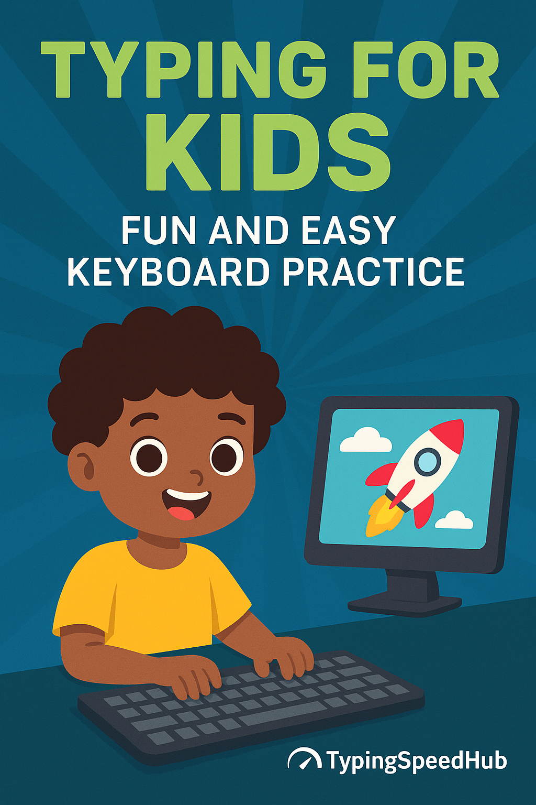

Typing for Kids: Fun and Easy Keyboard Practice
Learning to type is one of the most useful digital skills a child can build. Good typing habits help with schoolwork, online learning, writing assignments, and everyday computer use. The best approach is simple: keep practice short, make it fun, and build confidence step by step.
Want a quick warm-up? Try our 10-Minute Typing Drill designed for beginners and younger learners.

🧠 Why Kids Should Learn Typing Early
In today’s digital world, keyboard skills are essential for kids. Children use computers for school assignments, research, online learning, writing, and communication. Learning to type early can make all of these tasks feel easier and less frustrating.
Touch typing also supports independence. A child who can type comfortably spends less time hunting for letters and more time focusing on ideas, spelling, reading, and completing work.
🌟 Main Benefits of Typing Practice for Kids
Better school performance
Faster, more accurate typing can help children complete homework, classroom assignments, and essays with less stress.
More confidence on computers
When kids know where the keys are, they feel more comfortable using computers for learning, creativity, and communication.
Stronger focus
Keyboard familiarity reduces distractions caused by constant key-searching and helps children stay on task longer.
Useful lifelong skill
Typing is not just for school. It is a practical skill that will remain useful in everyday life, education, and future jobs.
🎮 Best Typing Tools and Games for Kids
Kid-friendly typing platforms should feel visual, simple, and rewarding. The best tools usually include:
- level-based progression and rewards
- clear instructions and instant feedback
- large text and easy-to-follow layouts
- short lessons that match a child’s attention span
- a balance of fun and skill-building
Games can help children stay interested, but not all typing games are equally useful. For a stronger list of options, read: Best Free Typing Games.
Good rule of thumb
Use games for motivation, but combine them with a simple routine and occasional progress checks. That combination usually works better than games alone.
⌨️ Teach the Home Row and Hand Position First
Before worrying about speed, help kids learn the keyboard layout and proper hand position. A strong foundation makes future practice much easier.
- Home row keys: A–S–D–F for the left hand and J–K–L–; for the right
- Thumbs rest on the spacebar
- The small bumps on F and J help children find home row without looking
- Hands should stay relaxed instead of tense or raised too high
If your child struggles with mistakes or awkward finger habits, this may help: Common Typing Mistakes.
🕒 Keep Practice Short, Fun, and Frequent
Kids usually learn typing best with short, repeatable sessions instead of long drills. Daily consistency matters more than intensity.
- Practice for 10 to 15 minutes a day
- Use mini-challenges instead of long repetitive exercises
- Switch between games, easy words, and simple sentence practice
- Reward effort, patience, and consistency rather than only high speed
Simple routine example
- 2 minutes: home row warm-up
- 5 minutes: beginner typing game or lesson
- 3 minutes: easy sentence typing
- 2 minutes: short review or quick progress check
For a more structured practice format, try our 7-Day Typing Plan.
🎯 Why Accuracy Matters More Than Speed at First
Many children want to type as fast as possible right away, but that often creates bad habits. Early typing practice should focus on clean, accurate key presses.
- Use all fingers instead of only two or three
- Slow down when mistake rates rise
- Encourage typing without looking at the keyboard too often
- Celebrate correct typing, not just fast typing
Accuracy builds muscle memory. Once children know where keys are and can hit them more reliably, typing speed usually improves naturally.
More help here: Typing Accuracy Tips.
📈 Track Progress with Realistic Typing Goals
Progress can vary a lot based on age, reading ability, and prior keyboard experience. These are only rough beginner-friendly ranges:
| Age Group | Approximate Beginner Range | Main Goal |
|---|---|---|
| Ages 6–8 | 5–15 WPM | Keyboard familiarity and confidence |
| Ages 9–12 | 20–35 WPM | Accuracy, rhythm, and home row comfort |
| Teens | 40+ WPM | Consistency and real-world typing fluency |
It is better to track progress every week or two rather than after every single session. That keeps typing practice positive and avoids unnecessary pressure.
Use a simple progress check here: Typing Speed Test.
If you want to understand typing speed scores better, also read: What Is WPM?.
⚠️ Common Mistakes Parents and Teachers Should Avoid
Pushing speed too early
This often creates more frustration and more mistakes. Accuracy should come first.
Making practice too long
Long sessions can feel tiring and boring. Short sessions are easier to repeat.
Ignoring posture and hand position
Good keyboard habits start with relaxed hands, a comfortable chair, and proper finger placement.
Using only games
Games are helpful, but they work best when combined with real text typing and simple lessons.
🏫 Typing for Kids at Home vs School
At home, typing practice can be more flexible and playful. At school, it may be more structured and tied to writing tasks. Both environments can be useful when expectations stay realistic.
- At home: shorter sessions, games, encouragement, and flexible pace
- At school: repeated lessons, keyboard familiarity, and practical writing use
The best results often happen when children get a little of both: fun practice at home and practical typing use during schoolwork.
FAQ: Typing for Kids
What is a good typing speed for kids?
A good typing speed depends on age and experience. Many younger children begin around 5 to 15 WPM, older kids often reach 20 to 35 WPM, and teens may type 40 WPM or more with regular practice.
How long should kids practice typing each day?
Most kids do best with 10 to 15 minutes of focused typing practice per day. Short, consistent sessions are usually more effective than long sessions.
Should kids focus on speed or accuracy first?
Accuracy first. Better finger placement and cleaner typing create the foundation for faster typing later.
Are typing games good for children?
Yes. Typing games can make practice feel more enjoyable and reduce boredom, especially for younger learners who respond well to visual rewards and short challenges.
At what age can kids start learning typing?
Many children can start learning basic typing habits around ages 6 to 8, depending on reading level, attention span, and comfort using a computer.
🚀 Next Steps
Typing can be a fun and rewarding skill for kids when practice stays positive and manageable. Start small, stay consistent, and celebrate progress rather than perfection.
Recommended next reads: Top Free Typing Games, 10 Ways to Improve Typing Speed, and Typing Tips.
Ads & transparency: This site may display advertising to support free content. See our Privacy Policy for details.